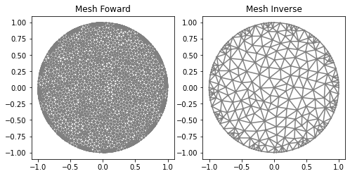

Module 1 - Mesh
- class module1_mesh.electrodes_position(L, per_cober, rotate, anticlockwise=True)
Object that contains the position of the electrodes in the boundary. The position is stored as the initial and final angles of each electrode.
- Parameters:
L (int) – Number of electrodes.
per_cober (float) – Percentual covered length in the boundary by electrodes, between 0 and 1.
rotate (float) – Rotation angle in the original solution for electrodes (in radians).
anticlockwise (bool, optional (default is True)) – If True, the electrodes are positioned anticlockwise, else clockwise.
- Example:
>>> ele_pos = electrodes_position(L=16, per_cober=0.5, rotate=0) >>> print(ele_pos.position) [[0.0, 0.19634954084936207], [0.39269908169872414, 0.5890486225480862], [0.7853981633974483, 0.9817477042468103], [1.1780972450961724, 1.3744467859455345], [1.5707963267948966, 1.7671458676442586], ..., [5.890486225480862, 6.086835766330224]]
- class module1_mesh.MyMesh(r, n, n_in, n_out, electrodes_obj)
Function that generates the mesh based on the electrodes’ position.
- Parameters:
r (float) – Circle radius.
n (int) – Refinement parameter.
n_in (int or list[int]) – Number of vertices on the electrodes.
n_out (int or list[int]) – Number of vertices in gaps.
electrodes_obj (
electrodes_position) – Object containing the electrodes’ positions.
- Returns:
dolfin.cpp.mesh.Mesh- Example:
>>> #Generate a mesh for an inverse problem: >>> ele_pos = electrodes_position(L=16, per_cober=0.5, rotate=0) >>> mesh_inverse = MyMesh(r=1, n=8, n_in=6, n_out=1, electrodes_obj=ele_pos) >>> #Generate a mesh for generate data with increased refinement: >>> mesh_refined = MyMesh(r=1, n=8*3, n_in=6*3, n_out=1*3, electrodes_obj=ele_pos)
The resulting mesh can be visualized with other tools.

{kind=link}